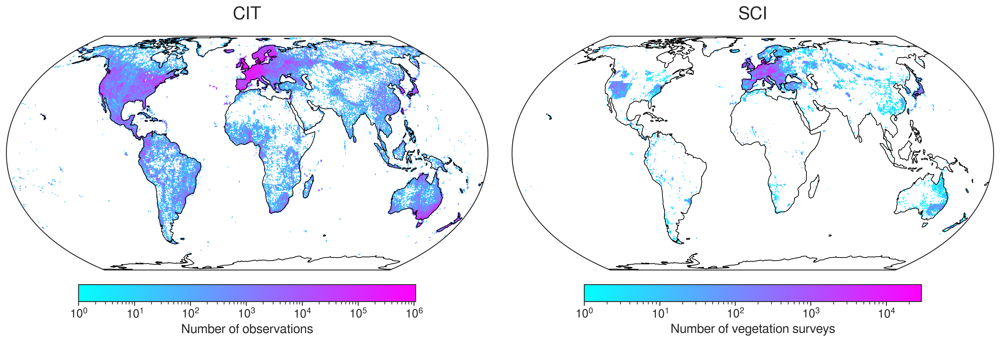
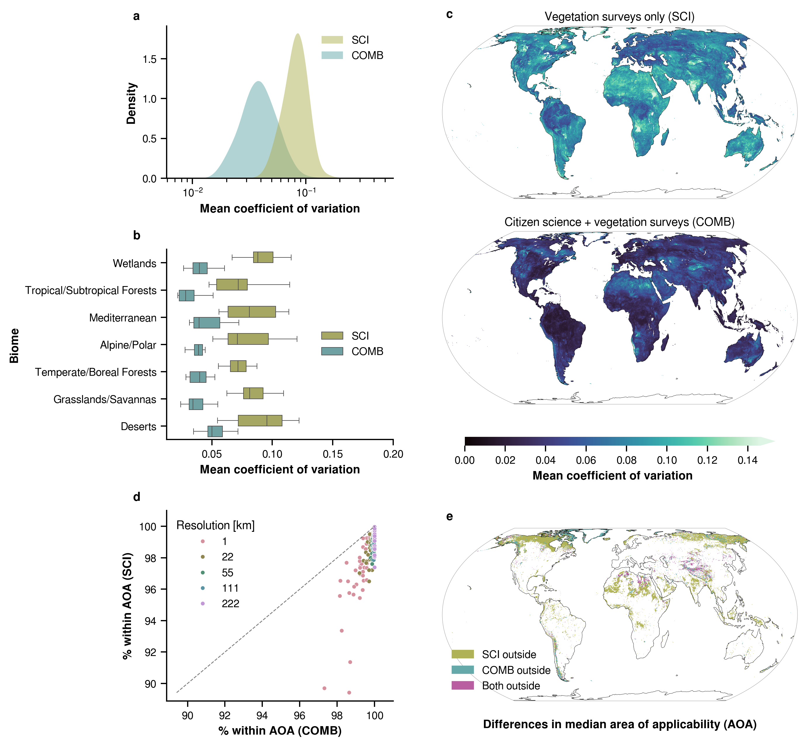

植物圖與地圖，來源不同。
開場與組成示意沿用專案生成的植物情境，用來解釋葉片大小與權重，不是研究樣區或模型訓練照片。「換一種組成」只改教學示意，沒有計算新的葉面積，也不會改動作者預測圖。
觀測分布、性狀預測與適用範圍圖，來自 Daniel Lusk 等人的公開程式庫，固定版本 001df300，採 CC BY 4.0。以原圖局部視窗配中文導讀，保留原色階，並提供完整圖檔。
同樣是葉子，大小可以差很多。這項研究想知道的，是一個地方常見植物的平均特徵。先看看葉片，再換一種植物組成，最後讀作者的預測地圖。
先看葉片大小。圖中的植物用來解釋概念，不是研究樣區。
地圖估的是地方平均特徵，不是從這張圖片量出每片葉子的面積。
植物紀錄怎麼變成這張地圖？生成情境示意
樣區內的相對覆蓋度
植物所占的比例不同，對當地平均特徵的影響也不同。
植物與比例都是教學示意；這裡的比例不代表株數，也不會改變作者的地圖。
美洲局部 · 保留這個區域的原色條
葉片大小，是認識植物的一種方式。植物圖為生成情境；預測圖：Lusk 等（2026），作者程式庫，CC BY 4.0。來源與呈現說明
某個地方若以大葉型植物為主，平均葉片大小可能和小葉型植物占優勢的地方不同。研究把物種的平均葉面積，依當地組成加權，得到「群聚加權平均」（CWM）。

LightGBM 學習氣候、土壤與遙測訊號，和植物平均特徵之間的關係，再用其他地方的環境資料作預測。它不是讀取開場圖片，再逐片量葉面積。
因此，地圖顏色表示的是模型推估的地方平均值。圖上的一格，也不表示研究者已走遍其中每個角落。
合併模型（COMB）在同一網格優先採用 sPlot 資料，並降低 GBIF 資料的權重。兩種來源的記錄方式不同，作者沒有把觀測次數直接當成樣區覆蓋度。
先認識一個地方的植物平均特徵，再看怎麼推估、哪些地方要小心。這支動畫沒有聲音。
做植物調查，不只認物種，也會量葉片大小。這個研究想知道：一個地方常見植物的葉子，平均大約有多大？
開場為生成情境示意，不是研究樣區，也沒有量出圖中葉片的面積。
研究先整理各物種的平均葉面積，再依它們在樣區內的相對覆蓋度加權。覆蓋比例較高的植物，對這個地方的平均特徵影響較大。
這叫群聚加權平均（CWM）。畫面的比例只是教學示意；平均葉片大小也不等於整片地面的葉面積總和。
調查樣區提供植物組成與覆蓋度；GBIF彙整的公民觀察及其他出現紀錄，則補到更多地方。觀察紀錄的頻率只能近似植物組成，不能當作實際株數。
兩張作者原圖的色條範圍不同，顏色不能直接比密度。紀錄少，也不代表當地植物少。
LightGBM從已有資料的地點，學習氣候、土壤與遙測訊號和植物特徵的關係，再推估其他地區。這張作者地圖裡，顏色越亮，預測的群聚平均葉面積越大。
這裡只放大美洲局部，保留該區原本的色階圖例與 mm² 單位。這是作者的預測，不是逐片葉子的實測。
模型遇到和訓練資料差很多的環境，推估結果可能不穩定。作者用適用範圍（AOA）描述這種差異。加入植物出現紀錄後，整體可適用的範圍更廣。
這是多種性狀的彙總比較，不是葉面積專屬圖。範圍外不等於沒有植物；範圍內也不保證每個預測都準。
研究把一部分地區的樣區留著，不拿來訓練，再用它們檢查預測。在原文標示的1 km²尺度，31項性狀有15項的相關係數達0.5以上，表現因性狀而異。
這是五折空間交叉驗證，參考值也是樣區的群聚平均。相關係數不是量對幾成；使用前仍要看該性狀的驗證結果與適用範圍。
研究把部分地區的樣區留著，不讓模型在當次訓練中看見，再用這些地區的參考值檢查預測。
這個數字說的是：31 項性狀中，有 15 項達到這個相關程度。它不是量對了 50%，也不是每個地方都估得準。
作者採五折空間交叉驗證，參考值來自留作驗證地區的 sPlot 群聚平均值，並非另做一套外部野外實驗。讀地圖時，仍要分別看每項性狀的表現。
適用範圍（AOA）比較的是預測地點與訓練資料的環境。超出範圍，表示推估要更謹慎；不代表那裡沒有植物。落在範圍內，也不保證每個預測都準。

圖版中的 COV 描述不同訓練分組所得預測之間的差異，不是預測正確的機率。這個量、AOA 和驗證相關係數，各自回答不同問題。
同一物種的葉片，也會隨環境和個體而不同。使用物種平均性狀，會省略這些種內差異；一張地方平均地圖更無法描述每一片葉子。
調查與觀察的地點並不均勻。增加出現紀錄能補充涵蓋範圍，卻不表示所有性狀、所有地方都變得更準。
開場與組成示意沿用專案生成的植物情境，用來解釋葉片大小與權重，不是研究樣區或模型訓練照片。「換一種組成」只改教學示意，沒有計算新的葉面積，也不會改動作者預測圖。
觀測分布、性狀預測與適用範圍圖，來自 Daniel Lusk 等人的公開程式庫，固定版本 001df300，採 CC BY 4.0。以原圖局部視窗配中文導讀，保留原色階，並提供完整圖檔。
研究為 Lusk 等（2026）的 Crowdsourced biodiversity monitoring fills gaps in global plant trait mapping，刊於 Nature Communications。這裡展示的是作者既有結果。
葉面積採 TRY 3113，單位 mm²；複葉以小葉計，是否包含葉柄未統一。它不是葉面積指數、樹冠面積或一整個網格內葉子的總面積。
主視覺聚焦原圖的美洲局部，保留該區色條。原圖上下兩個區域各自設定色階，不能直接把相同顏色當作相同數值。PNG 經過繪圖與重取樣，一個顯示畫素也不等於地面 1 km²。
地圖讓大範圍的植物差異更容易看見；使用前，還要看它是怎麼估出來的。